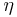
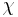
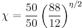
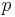
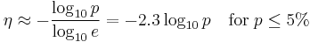
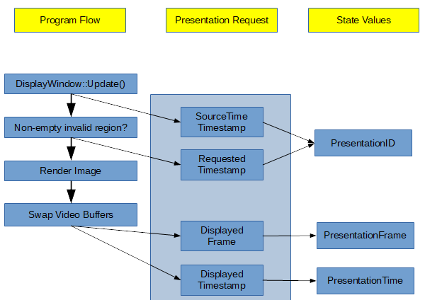

P3SpellerTask
User Reference
Synopsis
The P3SpellerTask filter implements Donchin's matrix speller paradigm (Sellers, Donchin, Schalk, 2004). Such a matrix speller presents a matrix of options; rows and columns of that matrix are flashed to elicit an evoked response (ERP) whenever the user's attended matrix element is flashed. From ERP classification results, the speller then derives which of the matrix elements was attended to, and executes the action corresponding to that matrix element. Typically, this action will consist in adding a character to a text window.
Beyond the basic features, the P3SpellerTask provides the ability to handle multiple speller menus, saving and recovering the text buffer, and an option to exchange information with an external program.
Typically, the P3SpellerTask is used in conjunction with the P3TemporalFilter signal processing filter.
Functional Description
Introduction
The P3SpellerTask displays matrix of characters, where the 6 by 6 matrix is the most common size (see Figure 1). The user's task is to focus attention on characters in a word that is prescribed by the investigator (i.e., one character at a time), and displayed on the user's screen. Alternatively, the user may freely choose letters he attends to, using the speller as a true communication device.
All rows and columns of this matrix are successively and randomly intensified. For a full set of intensifications of rows or columns, two contain the desired character (i.e., one particular row and one particular column). The responses evoked by these infrequent stimuli are different from those evoked by the stimuli that did not contain the desired character, in a manner similar to the classical P300 paradigm (Donchin, 1988).
The P3SpellerTask will catch such responses and then determine the character that user had focused on, and will print the character to the screen (below the word to spell) for the user to verify.
The entire set of stimuli is usually flashed several times before the P3SpellerTask calculates the desired character. To ensure maximum efficiency of character prediction, it is important that the stimuli are infrequent even between sequences. Therefore, the P3SpellerTask avoids starting a sequence with the row or column that was intensified last in the previous sequence.
{kind=link}
Visual Representation
The visual representation is divided into three parts (Figure 2):
- Text to Spell displays the text that the user needs to spell (only used in copy spelling mode).
- Text Result holds the letters spelled up to the current moment.
- Speller Display is the area that contains the speller matrix.
{kind=link}
In addition to the text characters, it is possible to display icons (bitmaps) in the P3Speller matrix. This can be achieved by entering the appropriate file name for the icon in column 4 of the desired cell in the TargetDefinition parameter. The icon will be flashed (highlighted) using a number of methods (see the description of the IconHighlightMode parameter below).Alternatively, an additional version of the icon may be displayed during stimulus presentation by entering the file name in an appropriately-labeled column. Although the sixth column has the correct label by default, any column except the first five may be used provided the column label is Intensified Icon. If an intensified icon is specified, it will be displayed as the highlighted version of the icon instead of using the IconHighlightMode parameter.
As new characters are added to the right, the Text Result area gets filled; once there is no space left, the text is scrolled to the left in order to accommodate for additional characters.
It is also possible to play a sound file or to "speak" text (using a Text-to-Speech engine) when a cell is selected. To play a sound file, the sound file name should be entered in column 5 of the desired cell in the target definition matrix. To enable a text-to-speech function, the text to be "spoken" should be entered in column 5 of the desired cell in the target definition matrix within single quotes (e.g. 'text'), as shown below.
{kind=link}
The Text-to-Speech engine uses the system's "default voice" setting (Control Panel->Speech->TextToSpeech->Voice Selection). Male or female voices may be selected.
Nested Matrices Howto
To allow for more flexibility in real-world applications, multiple speller matrices can be specified, and may be traversed in a "nested" manner. For example, one of the cells in the first matrix may be tied to another matrix which is displayed when this cell is selected by the user. This capability may be used to design a menu based user interface.
To use the nested menu capability, the following steps need to be executed:
Set up the Target Definition matrix
{kind=link}
To maintain backward compatibility and for ease of configuration, the application will not support nested functionality by simply converting one cell of the 'old' target definition matrix to a sub-matrix. To define nested matrices, the TargetDefinition parameter must be defined with 1 column and each cell as a sub-matrix. If it has more than one column, the application will treat it as a single matrix and will ensure that each of its cells is defined as a single value.
Convert each cell to a sub-matrix
In the GUI, this is done by right-clicking on each cell as shown in Figure 4, and choosing "Convert to sub-matrix" from the context menu.
{kind=link}
Configure individual sub matrices
Each cell in a nested matrix is a sub-matrix (as shown in Figure 3) and needs to be configured individually. In the GUI, clicking on a cell that is a sub-matrix will bring up that matrix in another window, as shown in Figure 5.
{kind=link}
Each sub-matrix should be configured to have a minimum of 3 columns and can have up to 5 columns if it needs to display icons or play sounds.
Special control codes (speller commands) allow transition from one matrix to another. To go to a different matrix when an item is selected, enter the <GOTO#> command into its "Enter" column, replacing "#" with the (one-based) index of the corresponding matrix (menu). The <BK> command will go back to the previous menu/matrix (see Figure 5).
The number of rows and columns in each sub-matrix needs to be entered into the NumMatrixRows and NumMatrixColumns parameters. There, individual entries are separated by space characters.
{kind=link}
Figure 6 indicates that the first three sub-matrices are 2x2, while the sub-matrix at index 4 is a 6x6 matrix.
In case of a single (non-nested) matrix, there will be only one entry in the NumMatrixRows and NumMatrixColumns parameters.
The index of the menu to be displayed first (i.e. when the application is started) is entered in the FirstActiveMenu parameter. In case of non-nested matrix configuration, this parameter should be left at its default value of 1.
The overall appearance of a nested matrix configuration is shown in Figure 7 below.
{kind=link}
Testing Matrix Menus
In order to test matrix menu configurations, the P3SpellerTask may be put into a test mode. In this mode, mouse clicks into matrix elements are registered during sequence presentation, and force selection of the respective matrix element.
Please note that the DisplayResults parameter needs to be turned on in order to be able to select sub matrices.
Pause and Sleep
There are two speller commands that allow the user to suspend operation of the P3SpellerTask either momentarily or for an extended period of time, <PAUSE> and <SLEEP>. To associate speller commands with certain matrix elements, specify them in the "Enter" column of the desired matrix element in the target definition matrix.
The <PAUSE> speller command pauses the P3SpellerTask: While the system is paused, the matrix will continue to flash but target selections shall be ignored until the user resumes system operation, which is achieved by selecting <PAUSE> again. The "goal text" line of the status bar indicates that the system is paused. Data recording continues while the system is paused.
For a matrix having N entries, one of which is <PAUSE>, the chance to erroneously resume system operation while paused is 1/N per selection. On average, this will happen after N selections in paused state. A second speller command, <SLEEP>, is provided as a safer option. Once in sleep state, the system will resume only after receiving two consecutive <SLEEP> selections, which requires N^2 selections on average to occur by chance. When in sleep mode, the "goal text" line of the status bar will instruct the user to select the <SLEEP> command twice to restart. Data recording is also suspended while the system is sleeping.
Text Window
The capability to display user selected text in a text window is available. This feature can be activated by selecting the TextWindowEnabled parameter. The text window can be enabled only in online (free spelling) mode. Position and size of the window, as well as display font, are configurable.
When the text window is enabled, any text that the user selects will appear in the text window, in addition to the text result area of the P3SpellerTask display. The text window will scroll automatically.
Two speller commands are available to perform Save and Retrieve operations on the text window. When the <SAVE> command is selected, the text in the text window will get written to a file and be erased from the window. The file name will be auto generated with the date and time stamp. The directory to which the file gets sent is configured in the TextWindowFilePath parameter. The <RETR> (retrieve) function reads the latest file that was saved by the user and recalls the text into the text window.
A separate "clear" command has not been provided in the text window functions to prevent unintentional deletion of its contents. The only way to clear the contents of the text window is using <SAVE>.
Parameters
WindowWidth, WindowHeight
The width and height of the subject-visible application window, in pixels.
WindowLeft, WindowTop
The screen position of the application window's top left corner, in pixels.
WindowBackgroundColor
The window's background color, given as an RGB value. For convenience, RGB values may be entered in hexadecimal notation, e.g. 0xff0000 for red.
PreRunDuration
The duration of the pause preceding the first sequence. Given in sample blocks, or in time units when immediately followed with 's', 'ms', or similar.
PostRunDuration
Duration of the pause following last sequence. Given in sample blocks, or in time units when immediately followed with 's', 'ms', or similar.
PreSequenceDuration
Duration of the pause preceding sequences (or sets of intensifications). Given in sample blocks, or in time units when immediately followed with 's', 'ms', or similar.
In free or copy mode, the PreSequenceDuration and PostSequenceDuration parameters may not go below twice the value of the StimulusDuration parameters, in order to allow for presentation of FocusOn and Result announcement stimuli.
PostSequenceDuration
Duration of the pause following sequences (or sets of intensifications). Given in sample blocks, or in time units when immediately followed with 's', 'ms', or similar.
When used in conjunction with the P3TemporalFilter, this value needs to be larger than the EpochLength parameter. This allows classification to complete before the next sequence of stimuli is presented.
StimulusDuration
For visual stimuli, the duration of stimulus presentation. For auditory stimuli, the maximum duration, i.e. playback of audio extending above the specified duration will be muted. Given in sample blocks, or in time units when immediately followed with 's', 'ms', or similar.
EarlyOffsetExpression
Allows the specification of an Expression that is constantly monitored during stimulus presentation. When the value of the Expression transitions from zero to non-zero, the stimulus is aborted early, even if the StimulusDuration has not yet elapsed. For example, set this Expression to KeyDown==32 and start your source module with the --LogKeyboard=1 flag: then the subject will be able to advance the stimulus sequence manually by pressing the space key.
ISIMinDuration, ISIMaxDuration
Minimum and maximum duration of the inter-stimulus interval. During the inter-stimulus interval, the screen is blank, and audio is muted.
Actual inter-stimulus intervals vary randomly between minimum and maximum value, with uniform probability for all intermediate values. Given in sample blocks, or in time units when immediately followed with 's', 'ms', or similar. Note that temporal resolution is limited to a single sample block.
InterpretMode
An enumerated value selecting on-line classification of evoked responses:
- 0: no target is announced "attended", and no classification is performed;
- 1: online or free mode: classification is performed, but no "attended target" is defined;
- 2: copy mode: "attended" targets are defined, classification is performed.
DisplayResults
Switches result display of copy/free spelling on or off. In the P3Speller, setting DisplayResults to 'off' will disable execution of all speller commands (such as switching matrices) as well.
MinimumEvidence
NOTE: If you are using your own classifier, this feature will not work properly unless your classifier's output matches certain criteria. Make sure to read these notes on how to use a different classifier.
By default, target selection is performed without considering the actual amount of evidence that favors the selected target over other targets. Although the selected target will always be a target with maximum classification score (i.e., evidence), other targets may have the same or a similar score. It may be useful to omit classification in such situations altogether, by specifying a minimum amount of evidence that must exist in favor of the selected target, when compared to the next-best target. When used together with the AccumulateEvidence option, this allows to dynamically control the number of stimulus presentations, by simply repeating stimulus sequences until a sufficient amount of evidence has been collected.
Setting MinimumEvidence to 0 or to a negative number will result in default behavior, i.e. there will be a target selection each time classification scores are received from the SignalProcessing module. For values greater 0, the amount of selection errors will become smaller as the value of MinimumEvidence is increased; this increases the amount of information contained in each selection. At the same time, it becomes more and more unlikely that a selection will occur at all within a certain amount of time; this decreases the amount of information transmitted per time (information flow, or bitrate). In between, a certain value will correspond to an optimal compromise between selection errors, and selection duration. At this point, the flow of information is maximized.
The meaning of the actual number entered into the MinimumEvidence parameter is relative to the amount of within-class variance present in the classification score. An evidence of 0 means a 50:50 chance for correct classification. Increasing the evidence value by two standard deviations corresponds to an improvement by a factor of roughly 88:12, four standard deviations correspond to (88:12)^2=(98:2) ... etc, approaching perfect classification as evidence increases towards infinity.
In classifier training, classifier weights may be normalized such that within-class variance is 1 (this is done by recent versions of the P300Classifier tool). In this case, you may use the following equations to convert between the MinimumEvidence parameter , and the correct classification chance :
.
For large , this relationship may be approximated and expressed in terms of error probability :
.
Thus, the evidence value roughly corresponds to twice the number of leading zeros in the desired error probability, if classifier weights are normalized. Some values are provided in the following table:
| Selection Error | Evidence |
|---|---|
| 5% | 3 |
| 1% | 4.6 |
| 0.5% | 5.3 |
| 0.1% | 6.9 |
| 0.05% | 7.6 |
| 0.01% | 9.2 |
AccumulateEvidence
By default, only those classification scores are used which have been received from the signal processing module immediately prior to classification. When AccumulateEvidence is set, classification scores are accumulated until a selection is actually performed. Typically, accumulated classification scores will have higher evidence values, such that a selection threshold set with MinimumEvidence will be eventually crossed after scores have been accumulated for some time.
This allows for dynamically choosing the number of stimulus repetitions in a P300 paradigm, by setting the number of stimulus repetitions to 1, and setting the MinimumEvidence parameter to a value greater zero.
In addition, accumulated overall evidence will not increase if there is no consistent evidence in favor of a certain target. Thus, it is possible to operate a P300 BCI in a quasi-asynchronous mode by using AccumulateEvidence, and choosing a MinimumEvidence value that is large enough to make accidental selection unlikely. In this configuration, no selection will be made unless the BCI user is actually concentrating on a target for a number of stimulus presentations, resulting in consistently accumulating evidence for that target.
NOTE: If you are using your own classifier, this feature will not work properly unless your classifier's output matches certain criteria. Make sure to read these notes on how to use a different classifier.
PhotoDiodePatch
Display a photo diode patch on the stimulus window. Recording from a photo diode located on that patch will allow triggering on actual stimulus delivery (see User_Reference:P3TemporalFilter#OnsetExpression).
PhotoDiodePatchHeight
Photo diode patch height in relative coordinates (between 0 and 1).
PhotoDiodePatchWidth
Photo diode patch width in relative coordinates (between 0 and 1).
PhotoDiodePatchLeft
Photo diode patch left position in relative coordinates (between 0 and 1).
PhotoDiodePatchTop
Photo diode patch top position in relative coordinates (between 0 and 1).
PhotoDiodePatchShape
Photo diode patch shape: 0 rectangle, 1 ellipse.
PhotoDiodePatchActiveColor
Photo diode patch color when active (RGB color in format 0xrrggbb).
PhotoDiodePatchInactiveColor
Photo diode patch color when inactive, (RGB color in format 0xrrggbb, use 0xff000000 for transparent).
PhotoDiodePatchExpression
Photo diode patch expression, determines active state by evaluating to nonnull. Defaults to StimulusBegin>0.
NumberOfSequences
The number of intensification sequences performed prior to each classification (selection of matrix elements). For an NxM speller matrix, a single intensification sequence comprises N+M intensifications, one for each row, and one for each column. Usually, this parameter is set to the same value as the P3TemporalFilter's EpochsToAverage parameter.
TargetDefinitions
A matrix defining elements of the speller matrix. Each row corresponds to a single matrix element; matrix elements are enumerated row-wise, beginning with the top left matrix element.
For each matrix element, the value in the first column, labeled Display, contains a text string to be displayed in the matrix element, i.e. the matrix element's caption.
The second column, labeled Enter, specifies the speller action to be performed upon the item's selection; in most cases, this action consists in entering a text string, and is specified by that string. E.g., for the top left matrix element to display the caption "A", and also enter the letter "A" on selection, both the Display and Enter columns will contain the letter "A".
The third column is labeled Size. It allows to specify an individual size for the matrix element, relative to the size of the other matrix elements.
The fourth and fifth columns, labeled Icon File and Sound, respectively, contain the path to an icon file to be displayed, and a sound to be played, when the matrix element is selected. For icon files, Windows BMP format is accepted. Sounds are given as a path to a Windows WAV file, or as a text enclosed in single quotes. When a text is given, it will be spoken using the system's Text-To-Speech engine. Paths may be absolute, or relative to the executable's working directory at startup, which usually matches the executable's location.
The sixth column is labeled Intensified Icon by default, and may contain the path to an additional icon file to be displayed as the highlighted version of an icon. Except for the first five columns, any column may be used for this purpose as long as it is labeled appropriately. Neither the text string nor the icon will be visible underneath the intensified icon during presentation.
Speller Commands
Speller commands are specified in the TargetDefinitions matrix' second column. Speller commands may be sequences of characters, which are added to the speller text when the respective item is selected. Additionally, speller commands may be speller control commands enclosed in a pair of <> characters. Any combination of characters and commands is allowed, and will be executed in sequence.
Available speller control commands are
- <BS> (backspace) -- delete the last character from the current text.
- <DW> (delete word) -- delete the last word from the current text.
- <UNDO> -- undo the effect of the previous speller action.
- <END> -- end spelling, put BCI2000 in suspended mode.
- <SLEEP> -- suspend spelling; resume when <SLEEP> is selected two additional times.
- <PAUSE> -- suspend spelling; resume when <PAUSE> is selected again.
- <GOTO x> -- go to speller menu #x (see Multiple Menus).
- <BACK>, <BK> -- return to the previously active speller menu.
- <SAVE> -- write the text window's content into a file located at TextWindowFilePath.
- <RETR> -- load the text window's content from the most recently saved file.
Multiple Menus
The P3SpellerTask allows you to specify a number of speller menus, and to switch between them using the <GOTO> and <BACK> speller commands. For multiple speller menus, the TargetDefinitions matrix needs to be configured as a list of matrices, rather than a single matrix. Then, each submatrix should have the form described above. Each of the submatrices may have an individual number of rows and columns, and its own set of matrix elements.
Also, switching to Multiple Menus implies additional entries in the following parameters:
- NumMatrixColumns, NumMatrixRows
- AudioStimuliRowsFiles, AudioStimuliRowsFiles (additional columns)
- TargetWidth, TargetHeight, TargetTextHeight, BackgroundColor
- TextColor, TextColorIntensified, IconHighlightMode, IconHighlightFactor
NumMatrixColumns, NumMatrixRows
The number of columns/rows in the speller matrix. For Multiple Menus, a list of numbers representing each menu's number of columns/rows.
AudioStimuliOn
Switches playback of audio stimuli on or off.
AudioStimuliRowsFiles, AudioStimuliColsFiles
Each of these parameters is a single-column matrix specifying audio files associated with speller rows or columns, respectively. Whenever a row/column is highlighted, the associated audio file is played back. For audio files, Windows WAV format is expected. Paths may be absolute, or relative to the executable's working directory at startup, which usually matches the executable's location. Rather than the path to an audio file, text may be given, enclosed in single quotes. In this case, the text is rendered using the system's Text-To-Speech engine.
TargetWidth, TargetHeight
A single matrix element's width/height in percent of screen width/height.
TargetTextHeight
Matrix elements' text height in percent of screen height.
BackgroundColor
Matrix elements' background color, given in RGB encoding.
TextColor, TextColorIntensified
Text color in standard and highlighted (intensified) mode, given in RGB encoding.
IconHighlightMode
An enumerated value specifiying how icons are highlighted on stimulus presentation:
- 0 Show/Hide: icons are only visible during stimulus presentation,
- 1 Intensify: highlight by increasing icon brightness,
- 2 Grayscale: display a grayscale version during stimulus presentation,
- 3 Invert: invert color/brightness values during stimulus presentation,
- 4 Dim: decrease brightness during presentation.
This value won’t be used if an intensified icon is specified.
IconHighlightFactor
If IconHighlightMode is 1 or 4, this parameter defines the brightness scaling factor. Dimming is equivalent to intensifying with a scaling factor less than 1.
FirstActiveMenu
For multiple menus, the index of the menu that should be active at the start of a run.
StatusBarSize, StatusBarTextHeight
The size and text height of the status bar in percent of screen height. The status bar is located on top of the screen, and displays a line of text currently spelled. In copy mode, it also displays the text that the user is supposed to spell.
TextToSpell
In copy mode, a string of characters defining the text to be spelled by the user. This text is displayed in the status bar, above the actually spelled text. From the difference between TextToSpell, and the actually spelled text, the speller automatically derives which matrix element the user will need to select next. This information is then used to set the StimulusType state.
TextResult
At the beginning of a run, this parameter's content is copied into the lower part of the status bar. At the end of a run, the status bar's content is copied back into this parameter.
TestMode
If this is switched on, clicking on a matrix element with the mouse will select it once the current sequence of intensifications is finished. This is useful to test speller matrix configurations.
DestinationAddress
A network address to receive speller output, given in IP:port format, e.g. localhost:3582. To this address, a UDP socket is opened, and written into, such that an external application may connect and receive information about selected matrix elements. For each selection, the speller will write whatever is contained in the selected matrix element's Enter field, preceded with P3Speller_Output and a space character, and followed with a \r\n sequence (i.e., an MSDOS style line ending). E.g., the output will be P3Speller_Output A\r\n when a matrix element is selected that enters the letter "A", and P3Speller_Output <BS>\r\n for a matrix element corresponding to the backspace command.
TextWindowEnabled
If this flag is switched on, a separate window is displayed. Once the status bar is filled, text flows into the window, and back in case of text deletion.
TextWindowLeft, TextWindowTop, TextWindowWidth, TextWindowHeight
Position and dimension of the text window in pixels.
TextWindowFontName, TextWindowFontSize
Text window font name and size.
TextWindowFilePath
A (relative or absolute) path to a directory. Upon the <SAVE> and <RETR> speller commands, the text window's contents are saved to/retrieved from a file located in that directory. Repeated <SAVE> commands do not result in overwriting existing files. Rather, existing files are preserved, and the most recent file's name is written into a pointer file. Paths may be absolute, or relative to the executable's working directory at startup, which usually matches the executable's location.
States
PreStimulusTime
A 16-bit time stamp in the same format as the SourceTime state. This time stamp is set immediately before the application module is going to update the stimulus/feedback display. Note that a data block is saved together with the state vector that existed immediately after it was acquired. Thus, PreStimulusTime will be the prestimulus time of the block prior to the current block.
StimulusTime
A 16-bit time stamp in the same format as the SourceTime state. This time stamp is set immediately after the application module has updated the stimulus/feedback display. Note that a data block is saved together with the state vector that existed immediately after it was acquired. Thus, StimulusTime will be the stimulus time of the block prior to the current block.
PresentationRequested
This 32-bit state contains a list of ids for all presentations that have been requested during the current block. The list ends with a value of 2^31. A 32-bit presentation id is formed by combining the 16-bit SourceTime state of the presentation request's data block in the most significant bits, with the time difference between that source time stamp and the time when the presentation request happened, in the least significant bits:
PresentationID = SourceTime << 8 | (RequestTime - SourceTime) & 0xff
This definition makes presentation ids unique within the range of a minute, and allows to extract the value of the request's time stamp from its id.
PresentationDisplayed
This 32-bit state contains a list of ids for all presentations that have been displayed during the current block. The list ends with a value of 2^31. Presentation ids appear in the PresentationRequested state when presentation is requested, and subsequently in the PresentationDisplayed state when presentation has occurred.
PresentationTime
A 16-bit time stamp in the same format as the SourceTime state. For each id occurring in the PresentationDisplayed state, this state contains the time stamp of the respective update to video memory. From this point in time, up to two additional frame durations may be required before the display's surface actually shows a difference in signal. This depends on the internals of the display, and cannot be determined from software.
PresentationFrame
A 12-bit state that contains, for each id occurring in the PresentationDisplayed state, the frame number of the respective update to video memory. Frame numbers have an arbitrary offset, and wrap around at a value of 2^11. 
{kind=link}
AudioBufferTime
A 16-bit time stamp in the same format as the SourceTime state. For each audio presentation that has occurred during the current block, this state contains the time stamp when non-zero audio data were about to enter the system's audio buffer.
AudioPresentationTime
A 16-bit time stamp in the same format as the SourceTime state. For each audio presentation that has occurred during the current block, this state contains the estimated time stamp when non-zero audio data were being played from the system's speakers or headphones. The estimate takes the length of the system's audio buffers into account but will not be able to detect external sources of delays, such as additional audio processing steps.
StimulusCode
The numerical ID of the stimulus being presented (16 bit).
StimulusType
This state is 1 during presentation of an attended stimulus, and 0 otherwise. The notion of an "attended" stimulus requires data recording in copy mode.
StimulusBegin
This state is 1 during the first block of stimulus presentation, and 0 otherwise.
PhaseInSequence
This state is 1 during pre-sequence, 2 during sequence and 3 during post-sequence (see Timeline).
PauseApplication
While this state is set to 1, no task processing occurs, i.e. the task is paused, and may be resumed by setting PauseApplication to 0.
SelectedTarget, SelectedRow, SelectedColumn
Upon classification, these states are set to the selected target's ID, and its associated row and column, respectively. A target's ID matches its row number in the TargetDefinitions matrix.
SpellerMenu
This state contains the one-based index of the current speller menu. It may be set to a different value in order to switch between menus.
Timeline
{kind=link}
See also
User Reference:P3TemporalFilter, User Reference:StimulusPresentationTask, Programming Reference:StimulusTask Class